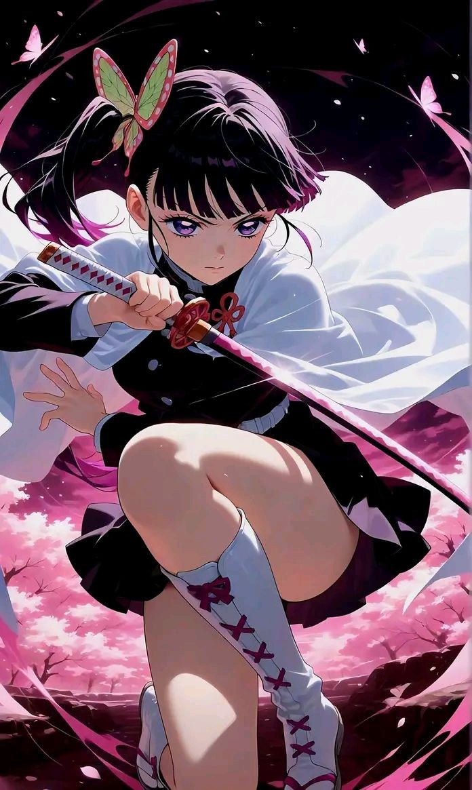

About Kanao
Kanao Tsuyuri is a major character in the dark fantasy manga and anime series Demon Slayer: Kimetsu no Yaiba. Kanao is a high-ranking member of the Demon Slayer Corps, originally serving as the Tsuguko (successor) of her adoptive older sister Shinobu Kocho. She is a practitioner of the Flower Breathing sword style, a skill passed down to her by her adoptive older sister Kanae Kocho.
Kanao's Characteristics
- She's highly trained Demon Slayer, expert in Flower Breathing, a technique derived from Water Breathing.
- She has Enhanced Eyesight which alLows her to predict an opponent's movements by observing subtle shifts in their muscles and joints.
- She possesses superhuman physical abilities, including speed, strenght, and endurance.
- She's quiet and reserved.